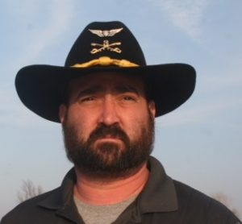

My name is Sean Roberts, I am an Oklahoma state Representative in district 36.
I am from Hominy, Oklahoma and decided I needed to do more for my state and my people and decided to run for office and do my part.
You can contact me at sean.roberts@okfa.com or call me at 5801123312

My name is Brian Hobbs, I am currently the Mayor of my hometown Newkirk, Oklahoma.
I have lived in Newkirk my whole life. I like to stay involved with the community and my state the best I can.
I served in the U.S. Army, I wanted to defend my country and staying involved with politics is my way of serving now.
You can contact me at brian.hobbs@okfa.com or call me at 5801122212